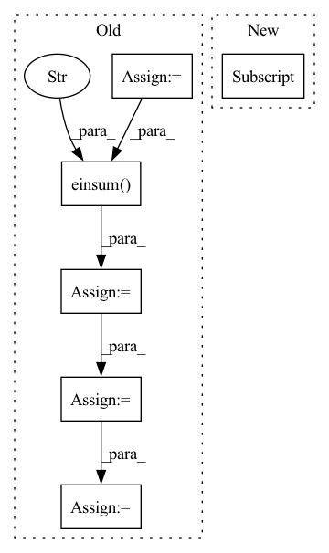

Pattern ID :13020

Before Change
sim_matrix = torch.einsum("ilk,juk->ijlu", z1, z2) // [batch_size, batch_size, num_conformers]
if self.norm:
z1_abs = z1.norm(dim=2)
z2_abs = z2.norm(dim=2)
sim_matrix = sim_matrix / torch.einsum("il,ju->ijlu", z1_abs, z2_abs)
sim_matrix = torch.amax(sim_matrix, dim=(2, 3)) // [batch_size, batch_size]
sim_matrix = torch.exp(sim_matrix / self.tau) // [batch_size, batch_size, num_conformers, num_conformers]
pos_sim = torch.diagonal(sim_matrix) // [batch_size]
loss = pos_sim / (sim_matrix.sum(dim=1) - pos_sim)
loss = - torch.log(loss).mean()
After Change
z1 = z1.view(batch_size, -1, metric_dim) // [batch_size, num_conformers, metric_dim]
z2 = z2.view(batch_size, -1, metric_dim) // [batch_size, num_conformers, metric_dim]
z1 = z1[:,:,None,:] // [batch_size, num_conformers, num_conformers, metric_dim]
z2 = z2[:,None,:,:] // [batch_size, num_conformers, num_conformers, metric_dim]
loss = F.mse_loss(z1,z2)
In pattern: SUPERPATTERN
Frequency: 3
Non-data size: 6
Instances
Fragment ID: 44018847
Project Name: hannesstark/3dinfomax
Commit Name: 075313255ed2d1cdb5b286ee8f8dade5b9d42c2a
Time: 2021-07-30
Author: hannes.staerk@gmail.com
File Name: commons/losses.py
M Class Name: NTXentMaximumSimilarity
N Class Name: NTXentMaximumSimilarity
M Method Name: forward(3)
N Method Name: forward(3)
M Parent Class: _Loss
N Parent Class: _Loss
M File Name: commons/losses.py
N File Name: commons/losses.py
M Start Line: 776
M End Line: 791
N Start Line: 776
N End Line: 781
'>
Before Change
return inp
inp = inp.reshape(ctx.dims.batch, -1, ctx.dims.spatial_mixing_kernel, ctx.dims.features)
inp = inp.transpose(0, 3, 1, 2)
shape = inp.shape
transposed_shape = list(shape)
transposed_shape[3], transposed_shape[2] = transposed_shape[2], transposed_shape[3]
inp = jnp.einsum("bfrs,sz,sz->bfrz", inp, weights[0], mask)
for wgt in weights[1:]:
inp = activate(ctx, inp)
inp = inp.reshape(*transposed_shape)
inp = jnp.einsum("bfsr,sz,sz->bfrz", inp, wgt, mask)
for _ in range(len(weights) - 1):
inp = inp.transpose(0, 1, 3, 2)
inp = inp.reshape(*shape)
return inp.transpose(0, 2, 3, 1).reshape(original_shape)
After Change
original_dims = "".join(chr(ord("a") + i) for i in range(len(inp.ndim)))
for i, wgt in enumerate(weights):
new_dims = original_dims[:i + 2] + "z" + original_dims[i + 3:]
reduced_dim = original_dims[i + 2]
if i > 0:
inp = activate(inp)
inp = jnp.einsum(f"{original_dims},{reduced_dim}z,{reduced_dim}z->{new_dims}", inp, wgt, mask)
return inp.reshape(original_shape)
'>
Fragment ID: 44018876
Project Name: homebrewnlp/homebrewnlp-jax
Commit Name: e3894fce349563809e673ef1a497a476f9bd8d34
Time: 2022-09-01
Author: 39779310+ClashLuke@users.noreply.github.com
File Name: src/model/mixer.py
M Class Name: AnonimousClass
N Class Name: AnonimousClass
M Method Name: mix(2)
N Method Name: mix(2)
M Parent Class:
N Parent Class:
M File Name: src/model/mixer.py
N File Name: src/model/mixer.py
M Start Line: 12
M End Line: 34
N Start Line: 14
N End Line: 32
'>
Before Change
// --- draw H_wisdom from H_desc with attention --- //
H_cls = H_all[:, 0] // (N, L, H) -> (N, H)
H_desc = self.H_desc(H_all) // (N, L, H) -> (N, K, H)
sims = torch.einsum("nh,nkh->nk", H_cls, H_desc) // (N, H) * (N, K, H) -> (N, K) (reduce over H)
attentions = torch.softmax(sims, dim=1) // (N, K) - normalise -> (N, K)
H_wisdom = torch.einsum("nk,nkh->nh", attentions, H_desc) // (N, K) * (N, K, H) -> (N, H) (reduce over K)
// --- now compare H_wisdom with all the wisdoms --- //
S_wisdom_figurative = torch.einsum("nh,wh->nw", H_wisdom, wisdom_embeddings) // (N, H) * (W, H) -> (N, W)
After Change
wisdom_embeddings = wisdom_embeddings_.squeeze() // (W, H)
// --- draw H_wisdom from H_desc with attention --- //
H_wisdom = self.H_wisdom(H_all, self.hparams["mode"])
// --- now compare H_wisdom with all the wisdoms --- //
S_wisdom_figurative = torch.einsum("nh,wh->nw", H_wisdom, wisdom_embeddings) // (N, H) * (W, H) -> (N, W)
return S_wisdom_figurative
'>
Fragment ID: 44018834
Project Name: eubinecto/wisdomify
Commit Name: e56cae77ec735117b792feb54efaad63d77231cd
Time: 2021-11-20
Author: eubinecto
File Name: wisdomify/models.py
M Class Name: RDGamma
N Class Name: RDGamma
M Method Name: S_wisdom_figurative(2)
N Method Name: S_wisdom_figurative(2)
M Parent Class: RD
N Parent Class: RD
M File Name: wisdomify/models.py
N File Name: wisdomify/models.py
M Start Line: 330
M End Line: 334
N Start Line: 346
N End Line: 346